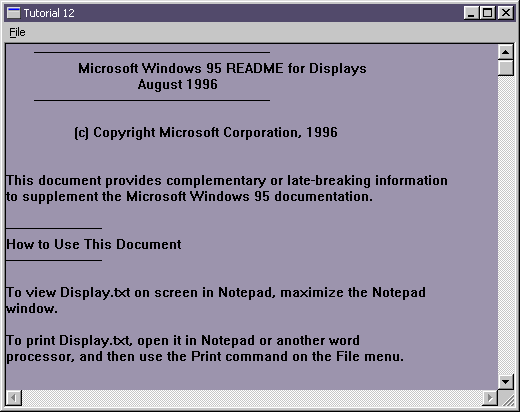

|
Tutorial 12 : Memory Management and File I/O
format PE GUI 4.0
entry start
include '%fasminc%\win32a.inc'
MI_OPEN equ 110
MI_SAVE equ 120
MI_EXIT equ 190
MEM_SIZE equ 65535
EDIT_ID equ 1
section '.data' data readable writeable
hMain dd ?
hInstance dd ?
wTitle db 'Tutorial 12',0
wClsName db 'TUT12',0
wMsg MSG
wCls WNDCLASS
hEdit dd ? ;handle for edit control
CLSNAME_EDIT db 'edit',0
dOpenTitle db 'Open File',0
dOpenFilter db 'All Files (*.*)',0,'*.*',0,0
dOpenOfn OPENFILENAME
dOpenBuffer: times 260 db 0
hFile dd ? ;handle to file
hMem dd ? ;handle to the allocated memory block
pMem dd ? ;pointer to the allocated memory block
szReadWrite dd ? ;number of bytes actually read or write
section '.code' code readable executable
start:
; +------------------------------+
; | registering the window class |
; +------------------------------+
invoke GetModuleHandle,NULL
mov [hInstance],eax
mov [wCls.hInstance],eax
mov [wCls.style],CS_HREDRAW or CS_VREDRAW
mov [wCls.lpfnWndProc],window_procedure
mov [wCls.lpszClassName],wClsName
mov [wCls.lpszMenuName],30
mov [wCls.hbrBackground],COLOR_WINDOW+1
invoke LoadIcon,NULL,IDI_APPLICATION
mov [wCls.hIcon],eax
invoke LoadCursor,NULL,IDC_ARROW
mov [wCls.hCursor],eax
invoke RegisterClass,wCls
; +--------------------------+
; | creating the main window |
; +--------------------------+
invoke CreateWindowEx,\
WS_EX_CLIENTEDGE,\
wClsName,\
wTitle,\
WS_OVERLAPPEDWINDOW or WS_VISIBLE,\
CW_USEDEFAULT,\
CW_USEDEFAULT,\
300,\
200,\
NULL,\
NULL,\
[hInstance],\
NULL
mov [hMain],eax
; +---------------------------+
; | entering the message loop |
; +---------------------------+
window_message_loop_start:
invoke GetMessage,wMsg,NULL,0,0
or eax,eax
je window_message_loop_end
invoke TranslateMessage,wMsg
invoke DispatchMessage,wMsg
jmp window_message_loop_start
window_message_loop_end:
invoke ExitProcess,0
; +----------------------+
; | the window procedure |
; +----------------------+
proc window_procedure,hWnd,uMsg,wParam,lParam
push ebx esi edi
cmp [uMsg],WM_CREATE
je wmCREATE
cmp [uMsg],WM_SIZE
je wmSIZE
cmp [uMsg],WM_COMMAND
je wmCOMMAND
cmp [uMsg],WM_DESTROY
je wmDESTROY
wmDEFAULT:
invoke DefWindowProc,[hWnd],[uMsg],[wParam],[lParam]
jmp wmBYE
wmSIZE:
mov eax,[lParam]
mov edx,eax
shr edx,16
and eax,0xFFFF
invoke MoveWindow,[hEdit],0,0,eax,edx,TRUE
jmp wmBYE
wmCREATE:
invoke CreateWindowEx,\
NULL,\
CLSNAME_EDIT,\
NULL,\
WS_VISIBLE or WS_CHILD or ES_LEFT or ES_MULTILINE or WS_VSCROLL or WS_HSCROLL or\
ES_AUTOHSCROLL or ES_AUTOVSCROLL,\
0,0,0,0,\
[hWnd],\
EDIT_ID,\
[hInstance],\
NULL
mov [hEdit],eax
invoke SetFocus,eax
mov [dOpenOfn.lStructSize],sizeof.OPENFILENAME
push hInstance
pop [dOpenOfn.hInstance]
mov [dOpenOfn.lpstrFilter],dOpenFilter
mov [dOpenOfn.lpstrFile],dOpenBuffer
mov [dOpenOfn.nMaxFile],260
jmp wmBYE
wmCOMMAND:
cmp [wParam],0xFFFF and MI_OPEN
je wmCOMMAND_MI_OPEN
cmp [wParam],0xFFFF and MI_SAVE
je wmCOMMAND_MI_SAVE
cmp [wParam],0xFFFF and MI_EXIT
je wmCOMMAND_MI_EXIT
jmp wmBYE
wmCOMMAND_MI_EXIT:
invoke DestroyWindow,[hWnd]
jmp wmBYE
wmCOMMAND_COMMAND_EXIT_POINT:
invoke SetFocus,[hEdit]
jmp wmBYE
wmCOMMAND_MI_OPEN:
mov [dOpenOfn.Flags],OFN_FILEMUSTEXIST or OFN_PATHMUSTEXIST or\
OFN_LONGNAMES or OFN_EXPLORER or OFN_HIDEREADONLY
invoke GetOpenFileName,dOpenOfn
cmp eax,TRUE
je wmCOMMAND_MI_OPEN_TRUE
jmp wmCOMMAND_COMMAND_EXIT_POINT
wmCOMMAND_MI_OPEN_TRUE:
invoke CreateFile,\
dOpenBuffer,\
GENERIC_READ or GENERIC_WRITE,\
FILE_SHARE_READ or FILE_SHARE_WRITE,\
NULL,\
OPEN_EXISTING,\
FILE_ATTRIBUTE_ARCHIVE,\
NULL
mov [hFile],eax
invoke GlobalAlloc,GMEM_MOVEABLE or GMEM_ZEROINIT,MEM_SIZE
mov [hMem],eax
invoke GlobalLock,eax
mov [pMem],eax
invoke ReadFile,[hFile],[pMem],MEM_SIZE-1,szReadWrite,NULL
invoke SendMessage,[hEdit],WM_SETTEXT,NULL,[pMem]
invoke CloseHandle,[hFile]
invoke GlobalUnlock,[pMem]
invoke GlobalFree,[hMem]
jmp wmCOMMAND_COMMAND_EXIT_POINT
wmCOMMAND_MI_SAVE:
mov [dOpenOfn.Flags],OFN_LONGNAMES or OFN_EXPLORER or OFN_HIDEREADONLY
invoke GetSaveFileName,dOpenOfn
cmp eax,TRUE
je wmCOMMAND_MI_SAVE_TRUE
jmp wmCOMMAND_COMMAND_EXIT_POINT
wmCOMMAND_MI_SAVE_TRUE:
invoke CreateFile,\
dOpenBuffer,\
GENERIC_READ or GENERIC_WRITE,\
FILE_SHARE_READ or FILE_SHARE_WRITE,\
NULL,\
CREATE_NEW,\
FILE_ATTRIBUTE_ARCHIVE,\
NULL
mov [hFile],eax
invoke GlobalAlloc,GMEM_MOVEABLE or GMEM_ZEROINIT,MEM_SIZE
mov [hMem],eax
invoke GlobalLock,eax
mov [pMem],eax
invoke SendMessage,[hEdit],WM_GETTEXT,MEM_SIZE-1,[pMem]
invoke WriteFile,[hFile],[pMem],eax,szReadWrite,NULL
invoke CloseHandle,[hFile]
invoke GlobalUnlock,[pMem]
invoke GlobalFree,[hMem]
jmp wmCOMMAND_COMMAND_EXIT_POINT
wmDESTROY:
invoke PostQuitMessage,0
wmBYE:
pop edi esi ebx
return
endp
section '.idata' import data readable writeable
library KERNEL32, 'KERNEL32.DLL',\
USER32, 'USER32.DLL',\
COMDLG32, 'COMDLG32.DLL'
import KERNEL32,\
GetModuleHandle, 'GetModuleHandleA',\
lstrcat, 'lstrcat',\
RtlZeroMemory, 'RtlZeroMemory',\
CreateFile, 'CreateFileA',\
GlobalAlloc, 'GlobalAlloc',\
GlobalFree, 'GlobalFree',\
GlobalLock, 'GlobalLock',\
GlobalUnlock, 'GlobalUnlock',\
ReadFile, 'ReadFile',\
WriteFile, 'WriteFile',\
CloseHandle, 'CloseHandle',\
ExitProcess, 'ExitProcess'
import USER32,\
RegisterClass, 'RegisterClassA',\
CreateWindowEx, 'CreateWindowExA',\
DefWindowProc, 'DefWindowProcA',\
LoadCursor, 'LoadCursorA',\
LoadIcon, 'LoadIconA',\
MessageBox, 'MessageBoxA',\
SendMessage, 'SendMessageA',\
SetFocus, 'SetFocus',\
GetMessage, 'GetMessageA',\
MoveWindow, 'MoveWindow',\
DestroyWindow, 'DestroyWindow',\
TranslateMessage, 'TranslateMessage',\
DispatchMessage, 'DispatchMessageA',\
PostQuitMessage, 'PostQuitMessage'
import COMDLG32,\
GetOpenFileName, 'GetOpenFileNameA',\
GetSaveFileName, 'GetSaveFileNameA'
section '.rsrc' resource data readable
directory RT_MENU,appMenu
resource appMenu,\
30,LANG_NEUTRAL,menuMain
menu menuMain
menuitem '&File',0,MFR_POPUP + MFR_END
menuitem 'Op&en',MI_OPEN,0
menuitem '&Save',MI_SAVE,0
menuseparator
menuitem 'E&xit',MI_EXIT,MFR_END
Result :

|